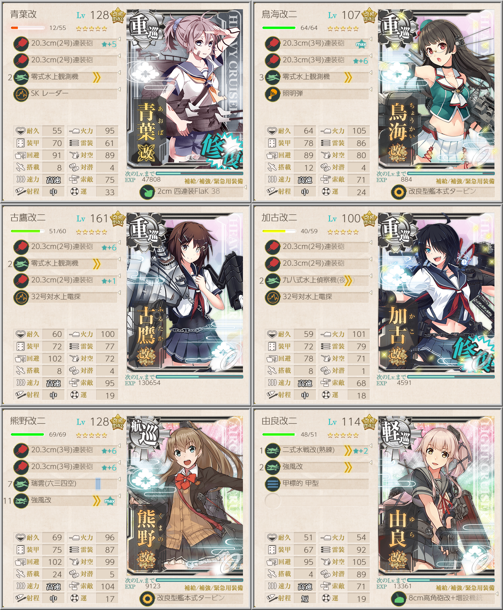
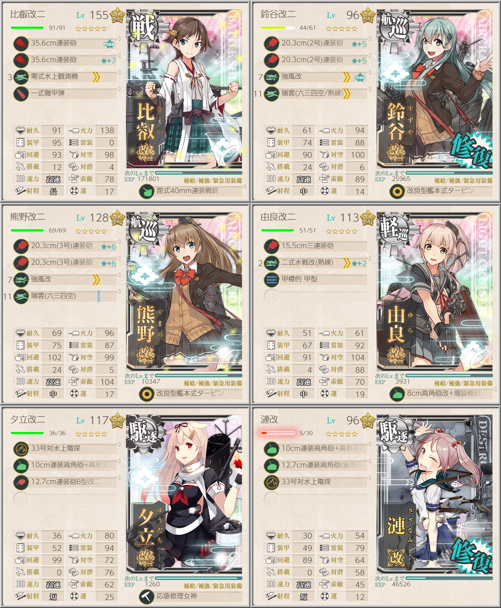
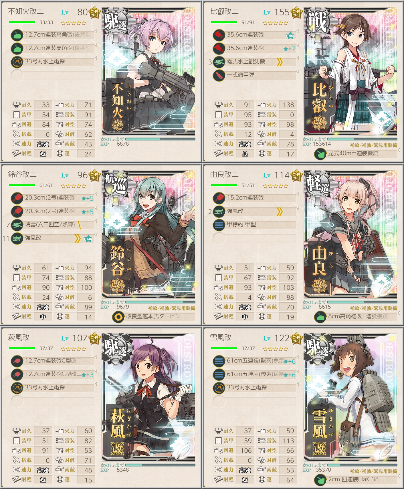

【艦これ】【第二期】5-3 サブ島沖海域
5-3 攻略メモ
任務
新編成「三川艦隊」、鉄底海峡に突入せよ！（クォータリー）

鳥海/青葉/衣笠/加古/古鷹/天龍/夕張から４隻を含む編成で5-1, 5-3, 5-4ボスにそれぞれS勝利する任務
熊野と由良で航空優勢を取って攻める
由良の連撃を切ってしまっているが、道中は夜戦なので夜戦連撃装備にして甲標的を外したほうが良いかも
そもそも強い編成のボスに対して制空均衡であることに変わりがないので、水戦1でも良さそう
「比叡」の出撃

比叡を旗艦にして5-3, 5-4ボスでS勝利する任務
ボスが異常に硬いので、制空権を意識して水戦多め
クリアを確実にするために、決戦支援推奨
最精鋭甲型駆逐艦、突入！敵中突破！

3-2, 4-2, 5-3ボスにそれぞれS勝利2回ずつの任務
陽炎改二、不知火改二、黒潮改二のうち1隻を旗艦とし、Lv75以上の陽炎型または夕雲型の随伴艦を2隻以上編成する必要がある
画像の構成では強いボス相手に制空均衡
戦艦を航巡に変えて水戦を増やし、航空優勢を安定させる手もあるようだ
雪風が陽炎型なので、レベルが上がっていれば採用すると良いだろう